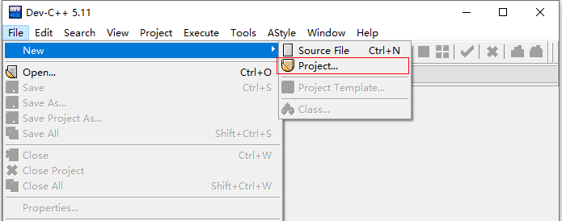
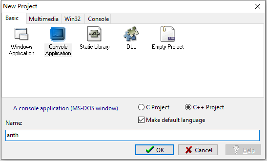
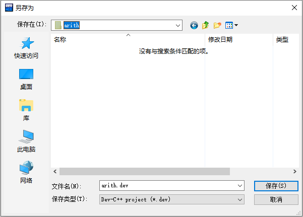
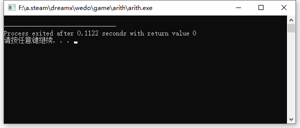
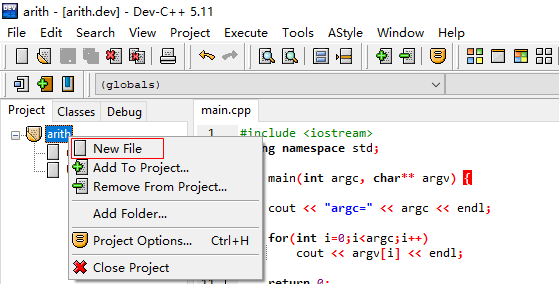

Dev Cpp 不但能写单片程序，还能写由多个程序文件组成的项目。 通过写多个文件的项目我们可以更好的理解头文件的作用。
控制台程序的执行方式是：
可执行程序名 参数列表（用空格分开）
例如
arith.exe hello world！
可执行程序arith.exe后面跟随两个参数hello和world!，空格是他们的分隔符。
我们可以通过如下程序读取命令行参数，并显示他们。
#include <iostream>
using namespace std;
int main(int argc, char** argv) {
cout << "argc=" << argc << endl;
for(int i=0;i<argc;i++)
cout << argv[i] << endl;
return 0;
}
输出的内容是
argc=3
arith.exe
hello
world！
argc=3？没看错，确实是3，可行执行程序名自己也是输入参数的一部分，而且是第一个。
.h文件又叫头文件，放在程序开始的地方用#include指令引入的，有两种引入方法：
#include <> 和 #include "" 都会在实现定义的位置查找文件，并将其包含。区别是:
我们先写一个自己的头文件args.h。

using namespace std;
void help(){
cout << "Usage: arith.exe [--help]|[--disp h|v]|[--numb 20]" << endl;
cout << endl;
cout << "--help :display help" << endl;
cout << "--disp :show problem model. You can select h(horizontal) or v(vertical)" << endl;
cout << "--numb :problem number" << endl;
cout << endl;
return ;
}
保存成Header files格式

在主程序中用#include "args.h"引入，然后调用help()方法：
#include <iostream>
#include "args.h"
using namespace std;
int main(int argc, char** argv) {
help();
return 0;
}
执行结果如下：

瞧！你也能写自己的头文件了！
找到这些头文件，并用记事本或notepad++打开瞧瞧，看看对你有没有一些启发？